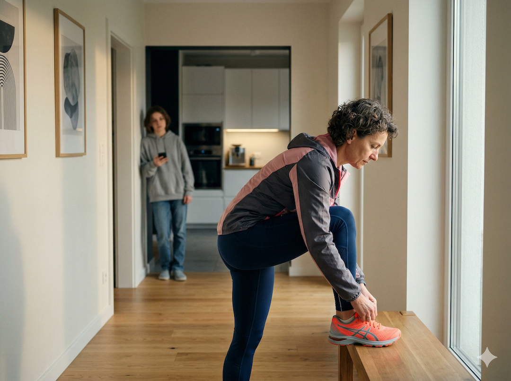
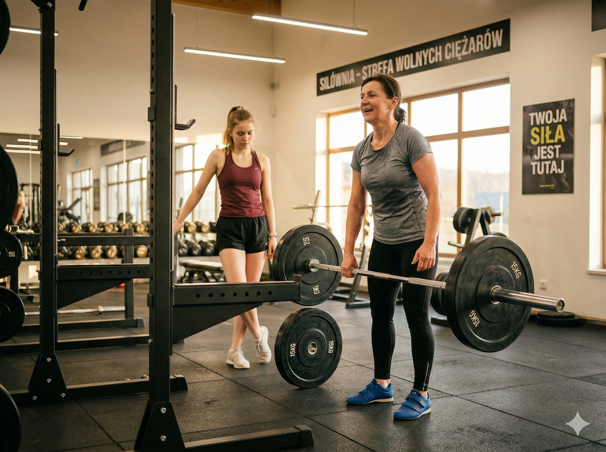
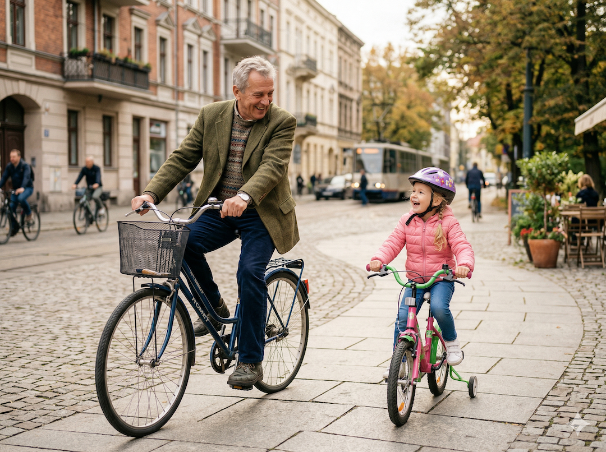
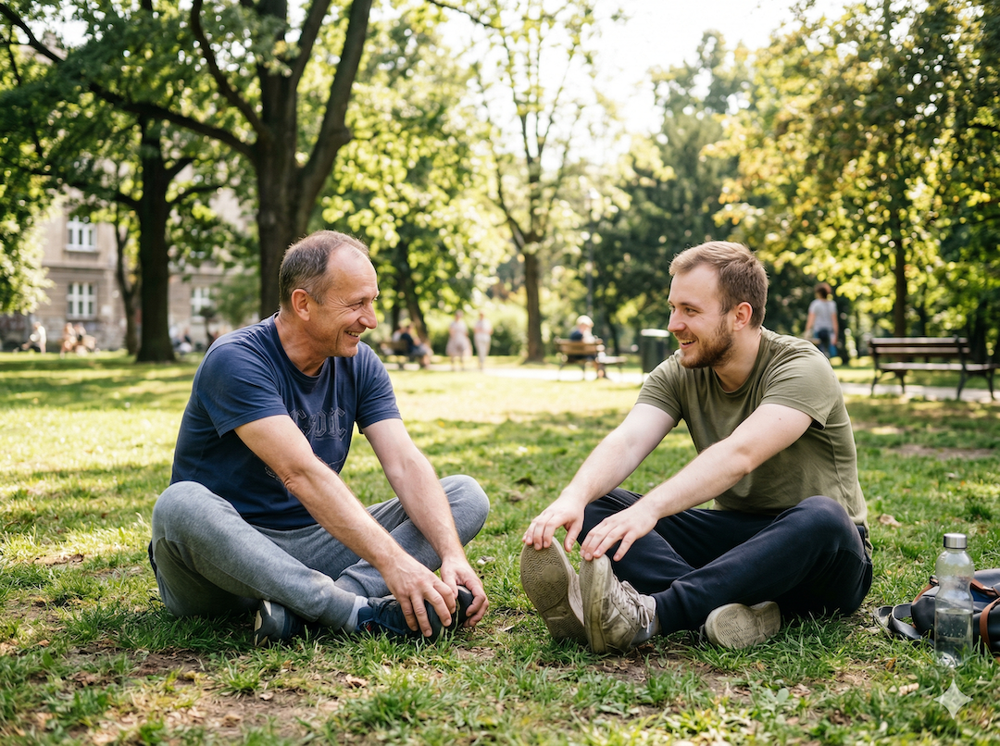

Jest jeden argument za aktywnością fizyczną po 50-tce, którego prawie nikt nie używa. Nie mówi się o nim na siłowniach, nie pojawia się w reklamach suplementacji, nie pada w gabinecie lekarskim. A jest chyba najpotężniejszy ze wszystkich. Chodzi o to, co po sobie zostawiasz. Nie majątek. Wzorzec.
Dziedziczenie, o którym szkoła nie uczy
Przez lata naukowcy skupiali się na tym, ile dzieci są aktywne fizycznie. Mniej na pytaniu: dlaczego. Ostatnie dekady badań dały odpowiedź, która jest równie zaskakująca, co logiczna: najsilniejszym predyktorem aktywności fizycznej u dziecka jest aktywność fizyczna rodzica. Nie namawianie. Nie zapis na zajęcia sportowe. Aktywność rodzica.
Systematyczny przegląd opublikowany w International Journal of Behavioral Nutrition and Physical Activity (2020), obejmujący dziesiątki badań, potwierdza: zdecydowana większość studiów odnotowuje pozytywny związek między aktywnością fizyczną rodziców a aktywnością dzieci. Nie symboliczny. Wyraźny i mierzalny.

dzieci jest nieaktywne fizycznie zgodnie z zaleceniami WHO. Najsilniejszym modyfikowalnym predyktorem tej aktywności jest — według badań — aktywność rodzica.
siedzącego trybu życia u dzieci tłumaczy siedzący tryb życia dziadka. Nie ojca, nie matki — dziadka. (Frontiers in Psychology, 2021, badanie z użyciem akcelerometrów).
CIEKAWOSTKA
Nie musisz biegać maratonów. Musisz być widoczny w ruchu. Kluczowy mechanizm nazywa się modelowaniem społecznym — dzieci imitują zachowania osób, które szanują i z którymi spędzają czas. To nie chodzi o to, czy biegasz sub-4h czy spacerujesz 30 minut dziennie. Chodzi o to, czy w ogóle ruszasz się — i czy robisz to regularnie, przy nich.
Epigenetyka — słowo straszne, temat niezwykły
Jest jeszcze jedna warstwa tego związku, która wychodzi poza psychologię i wchodzi w biologię. Badania cytowane w PMC (2019) wskazują, że aktywność fizyczna rodzica może wpływać na ekspresję genów potomstwa przez modyfikacje epigenetyczne. To znaczy: ciało rodzica aktywnego fizycznie wytwarza sygnały biologiczne, które trafiają do następnego pokolenia i wpływają na to, jak ich mózgi i ciała reagują na ruch. Dosłownie.
Badania na modelach zwierzęcych (PMC6874781) pokazują, że potomstwo ćwiczących rodziców miało niższy poziom metylacji DNA w hipokampie — obszarze mózgu odpowiedzialnym za pamięć. Badania na ludziach są wciąż we wcześniejszej fazie, ale kierunek jest wyraźny: to co robisz ze swoim ciałem ma znaczenie nie tylko dla Ciebie.
Co przekazujesz, kiedy siedzisz
Badania z Frontiers in Psychology (2021) pokazały, że siedzący tryb życia ojca jest istotnym predyktorem siedzącego trybu życia syna. Nie geny — nawyk. Dziecko, które widzi rodzica leżącego na kanapie przez większość wolnego czasu, dostaje sygnał: tak się żyje. Dziecko, które widzi rodzica wychodzącego na spacer, biegnącego lub siłownię, dostaje inny sygnał. I nosi go z sobą przez całe życie.
Nie musisz nic tłumaczyć. Musisz po prostu wyjść.
Jest badanie, które mnie uderzyło. Naukowcy zapytali rodziców, dlaczego promują aktywność fizyczną u dzieci. Najczęstsza odpowiedź: „chcę dać im zdrowe nawyki na całe życie”. I zaraz potem stwierdzali, że sami nie ćwiczą regularnie. Bo nie ma czasu. Bo praca. Bo zmęczenie.

Badania są nieubłagane: rodzice, którzy namawiają, ale sami nie ćwiczą, mają mniej aktywne dzieci niż rodzice, którzy po prostu ćwiczą. Słowa uczą znacznie słabiej niż przykład. To obowiązuje wszędzie — przy stole, przy pracy, w ruchu.
MIT
„Postaraj się być aktywny dla dzieci, bo będziesz żył dłużej i ich przy Tobie więcej.” To prawda, ale zbyt abstrakcyjna żeby motywować do działania. Mocniejsza wersja: Twoje dziecko ma 3 razy większe szanse na bycie aktywnym dorosłym, jeśli Ty jesteś aktywnym rodzicem. Nie za 30 lat. Decyzja o tym zapada teraz, kiedy Twoje dziecko widzi, co robisz po pracy.
Wspólny ruch: najprostszy most
Jedno z najważniejszych odkryć w badaniach nad aktywnością fizyczną w rodzinie: wspólna aktywność jest najbardziej efektywną formą wpływu. Spacer wieczór w wieczór. Rower w weekend. Pływanie. Nawet ogrodnictwo, jeśli wymaga chodzenia i noszenia.

To nie musi być siłownia. To nie musi być sport. To musi być Ty, w ruchu, obok nich. Reszta nastąpi sama.
CIEKAWOSTKA
Dzieci 3-krotnie chętniej ćwiczą gdy widzą ćwiczącego rodzica. Metaanaliza z PMC2909717 pokazuje: nastawienie rodzica do aktywności fizycznej jest silniejszym predyktorem aktywności dziecka niż wiek, płeć, lub dostęp do obiektów sportowych. Nie ile zarabia rodzic. Nie jak duże jest mieszkanie. Czy rodzic lubi się ruszać.

Źródła
- Petersen TL et al. Association between parent and child physical activity: a systematic review. Int J Behav Nutr Phys Act, 2020. PubMed 32423407.
- Repovš K et al. Are Family Physical Activity Habits Passed on to Their Children? Frontiers in Psychology, 2021. PMC8450430.
- Axsom JE, Libonati JR. Impact of parental exercise on epigenetic modifications inherited by offspring. PMC6874781.
- Trost SG et al. Parental Influence on Young Children's Physical Activity. PMC2909717.
- WHO: Physical Activity Guidelines — family-based activity recommendations. who.int, 2024.
- Full article: Parents' role constructions for facilitating physical activity in their young children. tandfonline.com/ajpy.